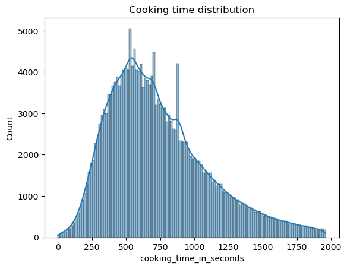

Code
df = pd.read_csv("./lmwn_case_study_data.csv")Task 2: Build anomaly detection models to identify anomalous patterns.
df = pd.read_csv("./lmwn_case_study_data.csv")Inspect the dataset columns
df.columns.tolist()['order_date',
'order_day_of_week',
'order_hour',
'delivery_status',
'payment_method',
'coupon_usage',
'delivery_fee',
'food_price',
'cooking_time_in_seconds',
'delivery_time_in_seconds',
'restaurant_id',
'restaurant_category',
'restaurant_type',
'province',
'nb_menu_items']Calculate statistics for numeric columns
df.describe()| order_date | order_hour | delivery_fee | food_price | cooking_time_in_seconds | delivery_time_in_seconds | restaurant_id | nb_menu_items | |
|---|---|---|---|---|---|---|---|---|
| count | 236142.000000 | 236142.000000 | 236142.000000 | 236142.000000 | 210176.000000 | 215338.000000 | 236142.000000 | 230337.000000 |
| mean | 212.946994 | 14.544892 | 16.205973 | 196.778639 | 782.585585 | 541.573563 | 98.985221 | 85.563557 |
| std | 106.790041 | 4.085919 | 30.912053 | 206.840366 | 612.569108 | 496.373077 | 52.467492 | 82.752999 |
| min | 1.000000 | 0.000000 | 0.000000 | 0.000000 | 0.000000 | 0.000000 | 1.000000 | 1.000000 |
| 25% | 122.000000 | 11.000000 | 0.000000 | 80.000000 | 468.000000 | 317.000000 | 55.000000 | 34.000000 |
| 50% | 228.000000 | 14.000000 | 10.000000 | 138.000000 | 681.000000 | 468.000000 | 104.000000 | 61.000000 |
| 75% | 310.000000 | 18.000000 | 15.000000 | 230.000000 | 980.000000 | 671.000000 | 142.000000 | 106.000000 |
| max | 365.000000 | 23.000000 | 1182.000000 | 7001.000000 | 156541.000000 | 101097.000000 | 200.000000 | 969.000000 |
Checking each column for null values
df.isna().sum().sort_values(ascending=False)cooking_time_in_seconds 25966
delivery_time_in_seconds 20804
nb_menu_items 5805
order_date 0
order_day_of_week 0
order_hour 0
delivery_status 0
payment_method 0
coupon_usage 0
delivery_fee 0
food_price 0
restaurant_id 0
restaurant_category 0
restaurant_type 0
province 0
dtype: int64Inspect rows with null delivery time
df[df["delivery_time_in_seconds"].isna()].head()| order_date | order_day_of_week | order_hour | delivery_status | payment_method | coupon_usage | delivery_fee | food_price | cooking_time_in_seconds | delivery_time_in_seconds | restaurant_id | restaurant_category | restaurant_type | province | nb_menu_items | |
|---|---|---|---|---|---|---|---|---|---|---|---|---|---|---|---|
| 11 | 1 | Monday | 12 | CANCELED_BY_USER | CASH | NO COUPON | 10.0 | 85.0 | NaN | NaN | 106 | Delivery Only | NON-CHAIN | Bangkok | 15.0 |
| 18 | 1 | Monday | 12 | COMPLETED | CASH | NO COUPON | 10.0 | 110.0 | 446.0 | NaN | 123 | Rice Dish | NON-CHAIN | Pathum Thani | 21.0 |
| 45 | 1 | Monday | 11 | CANCELED_BY_RESTAURANT | CASH | COUPON USED | 123.0 | 547.0 | NaN | NaN | 47 | Dessert | CHAIN_RESTAURANT | Bangkok | 29.0 |
| 73 | 1 | Monday | 11 | CANCELED_BY_RESTAURANT | CASH | NO COUPON | 0.0 | 189.0 | NaN | NaN | 46 | Steak House/Barbeque | NON-CHAIN | Bangkok | 52.0 |
| 80 | 1 | Monday | 19 | CANCELED_BY_RESTAURANT | CASH | NO COUPON | 0.0 | 105.0 | NaN | NaN | 87 | Bakery/Cake | NON-CHAIN | Samut Sakhon | 51.0 |
Hypothesis: rows with null cooking time and delivery time is tied to delivery status that indicates failure.
Checking delivery status for rows with null cooking time or delivery time, the hypothesis is likely true.
df.loc[df["delivery_time_in_seconds"].isna(), "delivery_status"].value_counts()delivery_status
CANCELED_BY_USER 10464
CANCELED_BY_RESTAURANT 7573
EXPIRED_BY_DRIVER 1941
FAILED 245
CANCELED_BY_DRIVER 233
CANCELED_BY_CS 192
COMPLETED 120
QUOTED 8
PICK_UP_FAILED 8
DRIVER_TO_DESTINATION 6
REJECTED_BY_DRIVER 5
RESTAURANT_ACCEPTED 3
DRIVER_ARRIVED_RESTAURANT 2
RE_ASSIGNING_DRIVER 1
USER_CONFIRMED_PRICE 1
ARRIVED 1
RETURN_TO_SENDER_DONE 1
Name: count, dtype: int64df.loc[df["cooking_time_in_seconds"].isna(), "delivery_status"].value_counts()delivery_status
CANCELED_BY_USER 10464
CANCELED_BY_RESTAURANT 7553
COMPLETED 5424
EXPIRED_BY_DRIVER 1941
FAILED 202
CANCELED_BY_DRIVER 180
CANCELED_BY_CS 173
PICK_UP_FAILED 8
QUOTED 8
REJECTED_BY_DRIVER 5
RESTAURANT_ACCEPTED 3
DRIVER_ARRIVED_RESTAURANT 2
RE_ASSIGNING_DRIVER 1
DROP_OFF_DONE 1
USER_CONFIRMED_PRICE 1
Name: count, dtype: int64Confirm that delivery status that indicates failure truly corresponds with null delivery time and cooking time.
def count_na_by_status(status, normalize=True):
print(
df.loc[df["delivery_status"] == status, "delivery_time_in_seconds"]
.value_counts(dropna=False, normalize=normalize)
.head(1)
)
print(
df.loc[df["delivery_status"] == status, "cooking_time_in_seconds"]
.value_counts(dropna=False, normalize=normalize)
.head(1)
)
for status in df["delivery_status"].unique():
if status == "COMPLETED":
continue
print(status)
count_na_by_status(status)
print()CANCELED_BY_USER
delivery_time_in_seconds
NaN 1.0
Name: proportion, dtype: float64
cooking_time_in_seconds
NaN 1.0
Name: proportion, dtype: float64
CANCELED_BY_RESTAURANT
delivery_time_in_seconds
NaN 1.0
Name: proportion, dtype: float64
cooking_time_in_seconds
NaN 0.997359
Name: proportion, dtype: float64
CANCELED_BY_DRIVER
delivery_time_in_seconds
NaN 1.0
Name: proportion, dtype: float64
cooking_time_in_seconds
NaN 0.772532
Name: proportion, dtype: float64
FAILED
delivery_time_in_seconds
NaN 0.995935
Name: proportion, dtype: float64
cooking_time_in_seconds
NaN 0.821138
Name: proportion, dtype: float64
EXPIRED_BY_DRIVER
delivery_time_in_seconds
NaN 1.0
Name: proportion, dtype: float64
cooking_time_in_seconds
NaN 1.0
Name: proportion, dtype: float64
DRIVER_TO_DESTINATION
delivery_time_in_seconds
NaN 1.0
Name: proportion, dtype: float64
cooking_time_in_seconds
1916.0 0.166667
Name: proportion, dtype: float64
DROP_OFF_DONE
delivery_time_in_seconds
297.0 0.022727
Name: proportion, dtype: float64
cooking_time_in_seconds
567.0 0.022727
Name: proportion, dtype: float64
REJECTED_BY_DRIVER
delivery_time_in_seconds
NaN 0.714286
Name: proportion, dtype: float64
cooking_time_in_seconds
NaN 0.714286
Name: proportion, dtype: float64
PICK_UP_FAILED
delivery_time_in_seconds
NaN 1.0
Name: proportion, dtype: float64
cooking_time_in_seconds
NaN 1.0
Name: proportion, dtype: float64
RE_ASSIGNING_DRIVER
delivery_time_in_seconds
NaN 1.0
Name: proportion, dtype: float64
cooking_time_in_seconds
NaN 1.0
Name: proportion, dtype: float64
RESTAURANT_ACCEPTED
delivery_time_in_seconds
NaN 1.0
Name: proportion, dtype: float64
cooking_time_in_seconds
NaN 1.0
Name: proportion, dtype: float64
DRIVER_ARRIVED_RESTAURANT
delivery_time_in_seconds
NaN 1.0
Name: proportion, dtype: float64
cooking_time_in_seconds
NaN 1.0
Name: proportion, dtype: float64
USER_CONFIRMED_PRICE
delivery_time_in_seconds
NaN 1.0
Name: proportion, dtype: float64
cooking_time_in_seconds
NaN 1.0
Name: proportion, dtype: float64
QUOTED
delivery_time_in_seconds
NaN 1.0
Name: proportion, dtype: float64
cooking_time_in_seconds
NaN 1.0
Name: proportion, dtype: float64
ARRIVED
delivery_time_in_seconds
NaN 1.0
Name: proportion, dtype: float64
cooking_time_in_seconds
569.0 1.0
Name: proportion, dtype: float64
RETURN_TO_SENDER_DONE
delivery_time_in_seconds
NaN 1.0
Name: proportion, dtype: float64
cooking_time_in_seconds
884.0 1.0
Name: proportion, dtype: float64
CANCELED_BY_CS
delivery_time_in_seconds
NaN 1.0
Name: proportion, dtype: float64
cooking_time_in_seconds
NaN 0.901042
Name: proportion, dtype: float64
Drop rows with delivery status indicating failure.
status_fail = [
"CANCELED_BY_USER",
"CANCELED_BY_RESTAURANT",
"EXPIRED_BY_DRIVER",
"FAILED",
"CANCELED_BY_DRIVER",
"CANCELED_BY_CS",
"PICK_UP_FAILED",
"REJECTED_BY_DRIVER",
]
df = df.loc[~df["delivery_status"].isin(status_fail)]Check the remaining rows for null value
df.isna().sum().sort_values(ascending=False)nb_menu_items 5494
cooking_time_in_seconds 5440
delivery_time_in_seconds 143
order_date 0
order_day_of_week 0
order_hour 0
delivery_status 0
payment_method 0
coupon_usage 0
delivery_fee 0
food_price 0
restaurant_id 0
restaurant_category 0
restaurant_type 0
province 0
dtype: int64Number of menu items will not likely be used in the model, just fill with the its median.
df["nb_menu_items"] = df["nb_menu_items"].fillna(df["nb_menu_items"].median())Delivery time contains just 143 null values, which is not a lot, simply impute with median is appropriate.
df["delivery_time_in_seconds"] = df["delivery_time_in_seconds"].fillna(
df["delivery_time_in_seconds"].median()
)Cooking time contains a relatively large number of null values, consider imputing the value according to the median cooking time grouped by restaurant category. (Cooking time is likely depends on restaurant category.)
Checking for distribution of restaurant cateogry on rows containing null cooking time.
Calculate the median cooking time grouped by restaurant category. Impute missing values using the calculated values.
med_cooking_time = df.groupby("restaurant_category")["cooking_time_in_seconds"].median()
med_cooking_time[med_cooking_time.isna()] = df["cooking_time_in_seconds"].median()
med_cooking_time.plot(kind="bar", title="Median cooking time by restaurant category")df.loc[df["cooking_time_in_seconds"].isna(), "cooking_time_in_seconds"] = df.loc[
df["cooking_time_in_seconds"].isna(), "restaurant_category"
].map(med_cooking_time)Visualizing cooking time distribution after imputation.
quantile = df["cooking_time_in_seconds"].quantile([0.25, 0.75])
iqr = quantile[0.75] - quantile[0.25]
sns.histplot(
df.loc[
df["cooking_time_in_seconds"] <= quantile[0.75] + 2 * iqr,
"cooking_time_in_seconds",
],
kde=True,
).set_title("Cooking time distribution")Text(0.5, 1.0, 'Cooking time distribution')
Visualizing delivery time distribution.
quantile = df["delivery_time_in_seconds"].quantile([0.25, 0.75])
iqr = quantile[0.75] - quantile[0.25]
sns.histplot(
df.loc[
df["delivery_time_in_seconds"] <= quantile[0.75] + 2 * iqr,
"delivery_time_in_seconds",
],
kde=True,
).set_title("Delivery time distribution")Text(0.5, 1.0, 'Delivery time distribution')There seems to be a lot of orders with almost zero delivery time.
df[df["delivery_time_in_seconds"] <= 10].describe()| order_date | order_hour | delivery_fee | food_price | cooking_time_in_seconds | delivery_time_in_seconds | restaurant_id | nb_menu_items | |
|---|---|---|---|---|---|---|---|---|
| count | 2626.000000 | 2626.000000 | 2626.000000 | 2626.000000 | 2626.000000 | 2626.000000 | 2626.000000 | 2626.000000 |
| mean | 142.816832 | 14.592155 | 16.795887 | 184.114676 | 1362.166032 | 4.490099 | 94.992003 | 82.664128 |
| std | 83.820281 | 4.135892 | 33.168905 | 212.140257 | 2071.918362 | 2.300331 | 49.806218 | 78.061514 |
| min | 1.000000 | 0.000000 | 0.000000 | 0.000000 | 4.000000 | 0.000000 | 1.000000 | 1.000000 |
| 25% | 76.000000 | 11.000000 | 0.000000 | 70.000000 | 861.250000 | 3.000000 | 55.000000 | 34.000000 |
| 50% | 137.500000 | 14.000000 | 8.500000 | 120.000000 | 1147.500000 | 4.000000 | 101.000000 | 61.000000 |
| 75% | 207.000000 | 18.000000 | 15.000000 | 204.500000 | 1559.000000 | 6.000000 | 137.000000 | 105.000000 |
| max | 365.000000 | 23.000000 | 391.000000 | 1950.000000 | 76956.000000 | 10.000000 | 200.000000 | 969.000000 |
Drop columns that will obviously not go into the model. Delivery status now contains status of COMPLETED almost exclusively. Restaurant ID provides no value in the model.
df2 = df.drop(columns=["delivery_status", "restaurant_id"])List the remaining potential columns.
df2.dtypesorder_date int64
order_day_of_week object
order_hour int64
payment_method object
coupon_usage object
delivery_fee float64
food_price float64
cooking_time_in_seconds float64
delivery_time_in_seconds float64
restaurant_category object
restaurant_type object
province object
nb_menu_items float64
dtype: objectCalculate feature importance based on permutation importance score on a trained random forest regressor.
def calculate_permutation_importance(pipe, x, y, target):
plt.figure()
result = permutation_importance(pipe, x, y, n_repeats=10, random_state=1, n_jobs=-1)
importances = pd.DataFrame(
result.importances.T,
columns=x.columns,
)
importances.mean().sort_values(ascending=False).plot(
kind="bar", title="Feature importance for target " + target
)
def calculate_feature_importance(target):
X = df2.drop(columns=[target])
y = df2[target]
X_train, X_test, y_train, y_test = train_test_split(X, y, random_state=1)
ordinal_encoder = OrdinalEncoder()
one_hot_encoder = OneHotEncoder(drop="first")
column_transformer = ColumnTransformer(
[
("ordinal", ordinal_encoder, ["order_day_of_week"]),
(
"nominal",
one_hot_encoder,
[
"payment_method",
"coupon_usage",
"restaurant_category",
"restaurant_type",
"province",
],
),
],
remainder="passthrough",
)
pipe = make_pipeline(
column_transformer,
RandomForestRegressor(n_jobs=-1, random_state=1, max_depth=5),
)
pipe.fit(X_train, y_train)
calculate_permutation_importance(pipe, X_test, y_test, target)Rank feature importance for cooking time.
calculate_feature_importance("cooking_time_in_seconds")Rank feature importance for delivery time.
calculate_feature_importance("delivery_time_in_seconds")Based on the calculated feature importance, additional variables to include for anomaly detection for delivery time will be delivery fee. Additional variables for cooking time will be food price and restaurant category. (Delivery time is most likely not related to cooking time.)
Visualizing the distribution of delivery fee, does not looks like a Gaussian distribution.
sns.kdeplot(x=df["delivery_fee"])Calculate an approximated percentage of delivery time outlier according to the empirical rule that most data lies between \(Q_1-1.5\ \text{IQR}\) and \(Q_3+1.5\ \text{IQR}\) .
quantile = df["delivery_time_in_seconds"].quantile([0.25, 0.75])
iqr = quantile[0.75] - quantile[0.25]
df[df["delivery_time_in_seconds"] > quantile[0.75] + 1.5 * iqr].shape[0] / df.shape[0]0.044412886698410044Fit an isolation forest for detecting anomalous delivery time with contamination parameter set to the approximated outlier percentage.
X = df[["delivery_fee", "delivery_time_in_seconds"]]
detector = IsolationForest(random_state=1, contamination=0.0444)
detector.fit(X)
plt.figure(figsize=(20, 20))
disp = DecisionBoundaryDisplay.from_estimator(
detector,
X[(X["delivery_fee"] < 200) & (X["delivery_time_in_seconds"] < 10000)],
response_method="predict",
alpha=0.5,
)
plt.title("Delivery time anomaly detection")Text(0.5, 1.0, 'Delivery time anomaly detection')<Figure size 2000x2000 with 0 Axes>sns.kdeplot(x=df.loc[df["food_price"] < 3000, "food_price"]).set_title(
"Food price distribution"
)Text(0.5, 1.0, 'Food price distribution')tmp = df2[df2["cooking_time_in_seconds"] < 6000]
sns.displot(
tmp,
x="cooking_time_in_seconds",
common_norm=True,
col="restaurant_category",
col_wrap=3,
bins=50,
kde=False,
)Approximate the outlier percentage for cooking time in the same way.
quantile = df["cooking_time_in_seconds"].quantile([0.25, 0.75])
iqr = quantile[0.75] - quantile[0.25]
df[df["cooking_time_in_seconds"] > quantile[0.75] + 1.5 * iqr].shape[0] / df.shape[0]0.040616675484272176Fit an isolation forest for detecting anomalous cooking time. Using sklearn pipeline to first transform categorical features.
data = df[["food_price", "cooking_time_in_seconds", "restaurant_category"]].copy()
column_transformer = ColumnTransformer(
[
(
"nominal",
OneHotEncoder(drop="first", sparse_output=False),
["restaurant_category"],
),
],
remainder="passthrough",
)
X = column_transformer.fit_transform(data)
detector = IsolationForest(random_state=1, contamination=0.0406)
outlier = detector.fit_predict(X)
data["outlier"] = outlier == -1
fig, ax = plt.subplots(1, 2, sharey=True, figsize=(10, 5))
sns.scatterplot(
x="food_price",
y="cooking_time_in_seconds",
hue="outlier",
data=data[
(data["cooking_time_in_seconds"] < 3600)
& (data["food_price"] < 2000)
& (data["restaurant_category"] == " La Carte")
],
alpha=0.7,
ax=ax[0],
).set_title(" La Carte cooking time")
sns.scatterplot(
x="food_price",
y="cooking_time_in_seconds",
hue="outlier",
data=data[
(data["cooking_time_in_seconds"] < 3600)
& (data["food_price"] < 2000)
& (data["restaurant_category"] == "Sukiyaki/Shabu")
],
alpha=0.7,
ax=ax[1],
).set_title("Sukiyaki/Shabu cooking time")Text(0.5, 1.0, 'Sukiyaki/Shabu cooking time')Get order volume for each restaurant by day, only considering completed order.
volume = (
df[df["delivery_status"] == "COMPLETED"]
.groupby(["restaurant_id", "order_date"])
.size()
.reset_index(name="volume")
)Fill in zeros for days without order.
volume = (
volume.set_index(["restaurant_id", "order_date"])
.unstack(level=1)
.fillna(0)
.stack()
.reset_index()
)volume| restaurant_id | order_date | volume | |
|---|---|---|---|
| 0 | 1 | 1 | 2.0 |
| 1 | 1 | 2 | 0.0 |
| 2 | 1 | 3 | 2.0 |
| 3 | 1 | 4 | 2.0 |
| 4 | 1 | 5 | 4.0 |
| ... | ... | ... | ... |
| 72995 | 200 | 361 | 0.0 |
| 72996 | 200 | 362 | 0.0 |
| 72997 | 200 | 363 | 0.0 |
| 72998 | 200 | 364 | 0.0 |
| 72999 | 200 | 365 | 0.0 |
73000 rows 3 columns
# plt.figure(figsize=(20, 10))
# volume.groupby("order_date")["volume"].sum().plot(title="Total volume by date")
total_volume = volume.groupby("order_date")["volume"].sum()
from statsmodels.graphics.tsaplots import plot_acf, plot_pacf
total_volume.plot()from statsmodels.tsa.stattools import adfuller
vol_diff = total_volume.diff().dropna()
vol_diff.plot()
result = adfuller(vol_diff)
print("ADF Statistic:", result[0])
print("p-value:", result[1])ADF Statistic: -8.396370654328338
p-value: 2.293225310779515e-13plot_acf(vol_diff)
plot_pacf(vol_diff)
top5_mean = (
volume.groupby("restaurant_id")["volume"]
.mean()
.sort_values(ascending=False)
.head(5)
.index
)
top5_volatile = (
volume.groupby("restaurant_id")["volume"]
.std()
.sort_values(ascending=False)
.head(5)
.index
)
bottom5_mean = (
volume.groupby("restaurant_id")["volume"]
.mean()
.sort_values(ascending=True)
.head(5)
.index
)sns.relplot(
volume[volume["restaurant_id"].isin(top5_mean)],
x="order_date",
y="volume",
col="restaurant_id",
col_wrap=3,
kind="line",
)
vol_highmean = volume.loc[volume["restaurant_id"] == 39, "volume"].reset_index(
drop=True
)
vol_highmean.plot().set_title("Restaurant with high mean volume")Text(0.5, 1.0, 'Restaurant with high mean volume')vol_highmean_diff = vol_highmean.diff().dropna()
vol_highmean_diff.plot().set_title("First difference of volume")
result = adfuller(vol_diff)
print("ADF Statistic:", result[0])
print("p-value:", result[1])
plot_acf(vol_highmean_diff)
plot_pacf(vol_highmean_diff)ADF Statistic: -8.396370654328338
p-value: 2.293225310779515e-13
sns.relplot(
volume[volume["restaurant_id"].isin(bottom5_mean)],
x="order_date",
y="volume",
col="restaurant_id",
col_wrap=3,
kind="line",
)
vol_lowmean = volume.loc[volume["restaurant_id"] == 92, "volume"].reset_index(drop=True)
vol_lowmean.plot().set_title("Restaurant with low mean volume")
result = adfuller(vol_lowmean)
print("ADF Statistic:", result[0])
print("p-value:", result[1])
plot_acf(vol_lowmean)
plot_pacf(vol_lowmean)ADF Statistic: -4.805716142356635
p-value: 5.303301074102594e-05
sns.relplot(
volume[volume["restaurant_id"].isin(top5_volatile)],
x="order_date",
y="volume",
col="restaurant_id",
col_wrap=3,
kind="line",
)vol_volatile = volume.loc[volume["restaurant_id"] == 152, "volume"].reset_index(
drop=True
)
vol_volatile.plot().set_title("Resaturant with volatile volume")Text(0.5, 1.0, 'Resaturant with volatile volume')vol_volatile_diff = vol_volatile.diff().dropna()
vol_volatile_diff.plot().set_title("First difference of volume")
result = adfuller(vol_volatile_diff)
print("ADF Statistic:", result[0])
print("p-value:", result[1])
plot_acf(vol_volatile_diff)
plot_pacf(vol_volatile_diff)ADF Statistic: -7.3705485810778155
p-value: 8.995890685246919e-11
Train ARIMA model to forecast future volumes. If predicted volume and observed volume does not fall in the calculated confidence interval, label that data point an outlier.
def detect_anomaly(restaurant_id, alpha=0.05):
data = volume.loc[volume["restaurant_id"] == restaurant_id, "volume"]
train, test = data.iloc[:-10], data.iloc[-10:]
model = pm.auto_arima(train.to_numpy())
pred, confint = model.predict(10, return_conf_int=True, alpha=alpha)
plt.figure(figsize=(16, 5))
x0 = np.arange(data.shape[0])
plt.plot(x0, data, alpha=0.7, label="actual volume")
plt.scatter(x0[-10:], pred, marker="x", label="predicted volume")
plt.fill_between(
x0[-10:],
confint[:, 0],
confint[:, 1],
alpha=0.1,
color="b",
label="confidence interval",
)
anomaly = (test < confint[:, 0]) | (test > confint[:, 1])
plt.scatter(
x0[-10:][anomaly], test[anomaly], marker="x", color="r", label="anomaly"
)
plt.ylabel("Volume")
plt.xlabel("Day")
plt.title("Restaurant Order Volume")
plt.legend()detect_anomaly(1)def detect_anomaly(restaurant_id, alpha=0.05, test_size=10):
data = volume.loc[volume["restaurant_id"] == restaurant_id, "volume"].head(220)
train, test = data.iloc[:-test_size], data.iloc[-test_size:]
model = pm.auto_arima(train.to_numpy())
pred, confint = model.predict(test_size, return_conf_int=True, alpha=alpha)
display(model.summary())
plt.figure(figsize=(16, 5))
x0 = np.arange(data.shape[0])
plt.plot(x0, data, alpha=0.7, label="actual volume")
plt.scatter(x0[-test_size:], pred, marker="x", label="predicted volume")
plt.fill_between(
x0[-test_size:],
confint[:, 0],
confint[:, 1],
alpha=0.1,
color="b",
label="confidence interval",
)
anomaly = (test < confint[:, 0]) | (test > confint[:, 1])
plt.scatter(
x0[-test_size:][anomaly], test[anomaly], marker="x", color="r", label="anomaly"
)
plt.ylabel("Volume")
plt.xlabel("Day")
plt.title("Restaurant Order Volume")
plt.legend()
detect_anomaly(39, test_size=10)| Dep. Variable: | y | No. Observations: | 210 |
| Model: | SARIMAX(0, 1, 1) | Log Likelihood | -612.368 |
| Date: | Thu, 08 Feb 2024 | AIC | 1228.736 |
| Time: | 15:22:36 | BIC | 1235.421 |
| Sample: | 0 | HQIC | 1231.439 |
| - 210 | |||
| Covariance Type: | opg |
| coef | std err | z | P>|z| | [0.025 | 0.975] | |
| ma.L1 | -0.8311 | 0.038 | -21.741 | 0.000 | -0.906 | -0.756 |
| sigma2 | 20.4197 | 1.894 | 10.782 | 0.000 | 16.708 | 24.132 |
| Ljung-Box (L1) (Q): | 0.17 | Jarque-Bera (JB): | 1.91 |
| Prob(Q): | 0.68 | Prob(JB): | 0.38 |
| Heteroskedasticity (H): | 2.29 | Skew: | -0.18 |
| Prob(H) (two-sided): | 0.00 | Kurtosis: | 3.29 |